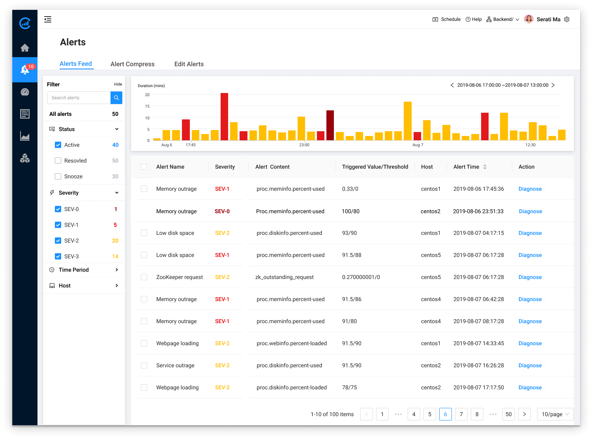
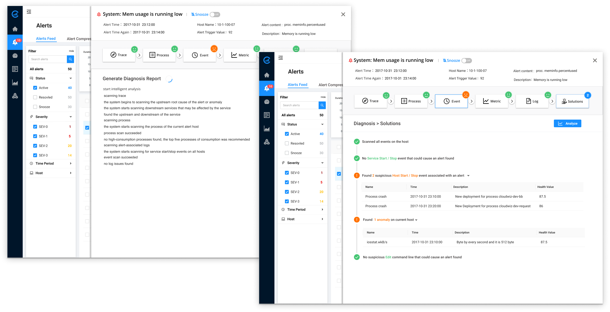
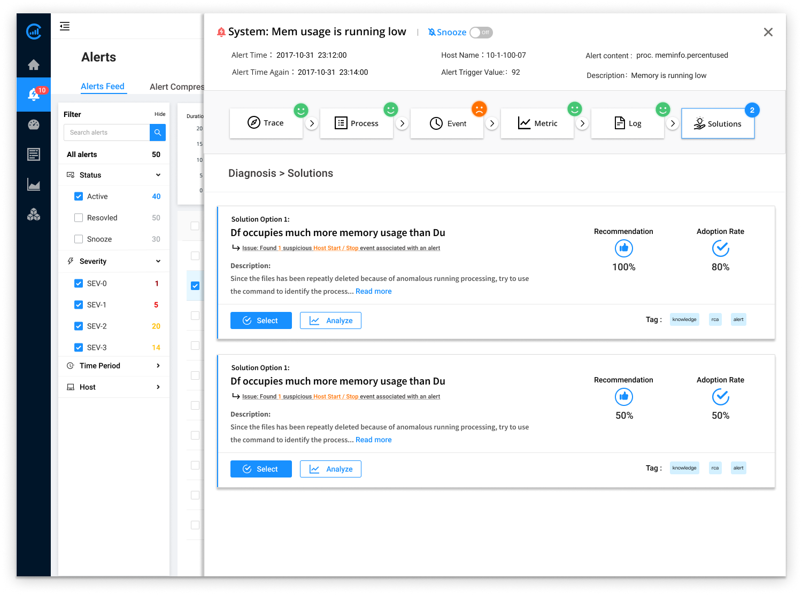
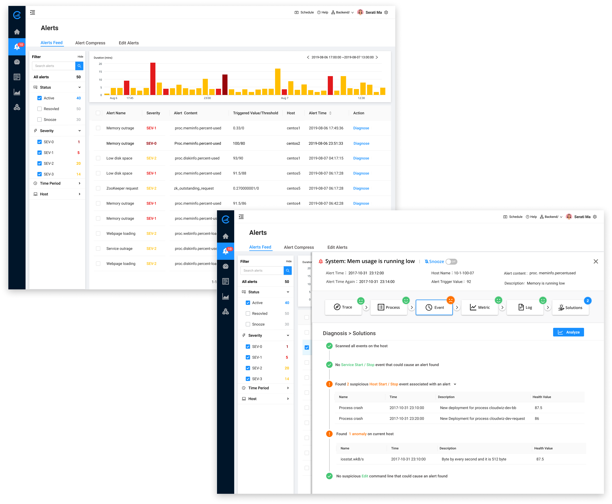
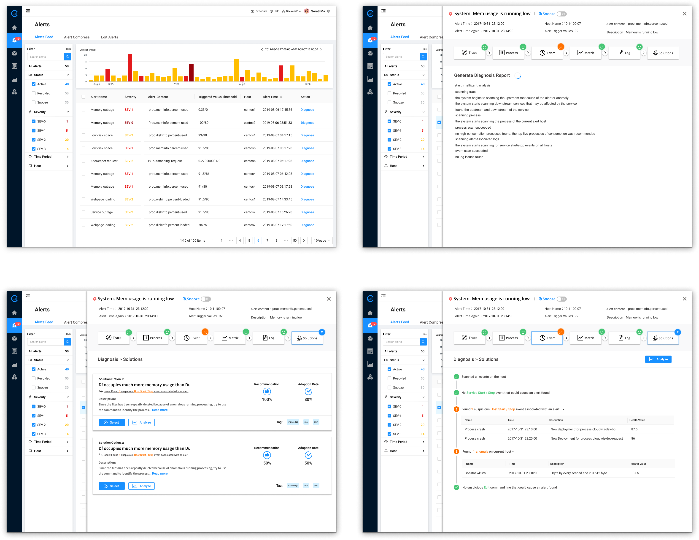

In 2016, Cloudwiz launched its first AI-powered application performance platform. After six months, the product attracted a wave of trial users — but nearly two-thirds didn't return. One of the primary reasons: a lack of structured troubleshooting onboarding left users stranded mid-workflow, unable to complete analysis and move forward.
Create an effective onboarding troubleshooting experience and build a standard diagnosis and solution closed loop — enabling users to pinpoint problems efficiently and surface AI-powered recommended solutions at the right moment.
As the sole designer on the team, I drove an iterative end-to-end UX design process — translating complex technical concepts into clear, actionable design deliverables and partnering closely with PMs and engineers to bring the design to life.
The troubleshooting redesign had to balance competing pressures in a startup environment:
Each solution addresses a specific failure mode in the troubleshooting workflow — moving from fragmented, manual investigation toward an automated, signal-driven diagnosis experience.
The refreshed alerting page provided advanced facet search options and a time-series diagram, giving users the ability to identify and isolate issues faster — reducing the cognitive load of scanning unstructured alert lists.
This shifted alert management from passive scanning to active, signal-driven prioritization.


Initiating a standard troubleshooting process shortens users' learning path and enables them to pinpoint problems more efficiently. Users can view problem details clearly at one stop — covering Top N processes, Logs, Metrics, and Events in a unified flow.
This unified view eliminated the need to cross-navigate between disconnected sections to understand a single issue.
Cloudwiz's core value is leveraging machine learning to debug and optimize performance proactively. We surfaced the automated troubleshooting process directly in the issue detail page — the system automatically scans, signals problem areas, and demonstrates recommended solution options.
This transformed the platform from a monitoring tool into an insight-to-action engine that guided users to resolution.


The redesign not only shortened the time spent on troubleshooting, it also attracted users to engage with recommended solutions and correlation analysis — the core value features of the platform.
"The most effective design decision wasn't adding a new feature — it was surfacing what the system already knew. Automating the diagnostic scan turned a manual, expert-only process into an accessible workflow for every user."
Three design iterations over six months — moving from novice-first step-by-step guidance toward an automated, AI-driven troubleshooting loop that serves both new and experienced users.
When I joined Cloudwiz, the MVP had been live for several months serving five enterprise clients. As more features were added, users increasingly dropped out during trial. Based on feedback from sales engineers, we concluded a lack of troubleshooting onboarding was the root cause. I framed three key design questions: What factors most commonly trigger alerts? Is there a standard workflow that handles all issues? And if so, how do we onboard users through it?
I conducted user interviews with two clients and one internal subject-matter expert, plus a competitive analysis of Datadog, New Relic, Dynatrace, and Splunk — finding that leading APM products consolidated relevant information into unified dashboards. I also created a journey map covering two typical user workflows to align stakeholders on the scope of impact and define success metrics. This led to identifying Top N processes, Logs, Metrics, and Events as the core troubleshooting areas.
.jpg)


Considering feedback came primarily from novice users, my first design solution walked users through each troubleshooting step all the way to recommended solutions. It tied all main features into a standard workflow, helping users establish a systematic troubleshooting mindset. While effective for new users, this design required too much hand-holding for experienced IT professionals who needed direct access to data.

For experienced users, I designed a dashboard view per issue — providing a high-level overview of key metrics and recommended solutions via graph-based panels covering the four main troubleshooting areas. The goal was to give experts full control based on prioritized information. However, this version still required significant manual effort to correlate signals across panels.


Inspired by a backend engineer's insight, I surfaced the automated troubleshooting process upfront. When users land on the issue detail page, the system automatically scans, signals problem areas, and demonstrates recommended solution options — closing the diagnosis loop without requiring manual investigation across sections. This design served both user segments simultaneously.



This project taught me that the most powerful design decisions aren't always visual — they're structural. Identifying the right pattern, building a standardized workflow, and then automating it transformed troubleshooting from a chaotic manual process into a guided, intelligent experience. Working as the sole designer in a resource-constrained startup reinforced the value of iterative thinking: each version revealed something the previous one couldn't, and the final design only emerged because we followed the signal from users and engineers alike. This perspective now shapes how I approach AI-powered product design — not as layering automation on top of existing flows, but as fundamentally rethinking what the system can surface on behalf of the user.